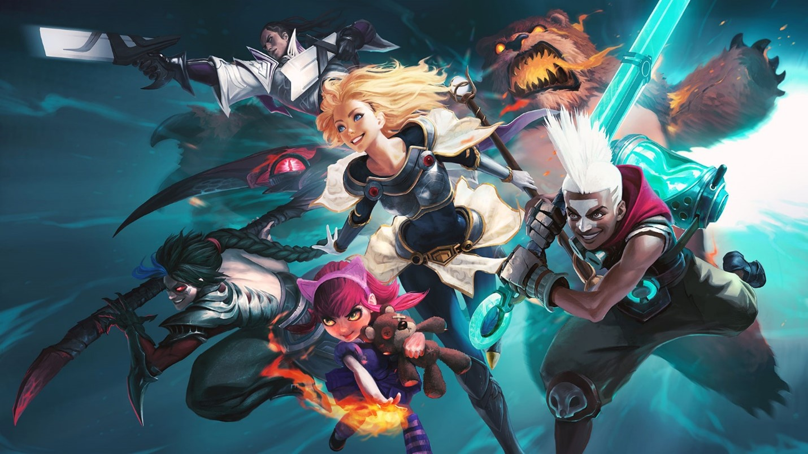

WILD RIFT PATCH NOTES 2.3A
Surf’s up! Patch 2.3a is here, featuring a host of balance changes for champions, items, summoner spells, and more. Dive into the festivities and make a splash at the Pool Party event!
AUTHOR Savannah Ho Alex Huang Ben Forbes
SOURCE:
Lol:Wildrift Patch Notes

LOL PATCH 11.12 NOTES
“We’ve got a light patch, focusing on champ adjustments this go-round (11.13’s going to have a big chunk of systems work). This means some love for Aphelios and some of his unpopular weapon combinations, and nerfs to Pro outliers (Renekton, Kai’Sa). Then the spotlight’s on everyone’s favorite, definitely trustworthy, definitely purple doctor. His appearance may seem revived, but we’re not too sure if the same can be expected of his patients.
If Mundo doesn’t get you, then we’ll see ya in the next one!
Take this portal to the TFT patch notes where Choncc's already partying in the pool.”
SOURCE:
League of Legends Patch Notes